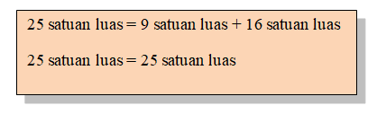
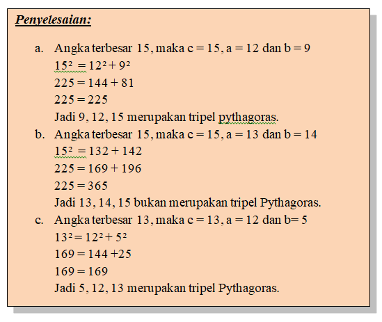

Luas persegi dan luas segitiga siku-siku dapat membantu dalam menemukan teorema Pythagoras.
Dalil Pythagoras merupakan salah satu dalil yang paling sering digunakan secara luas. Dalil ini pertama kali ditemukan oleh Pythagoras. Dalil ini sesungguhnya telah dikenal orang-orang Babilonia sekitar 1.000 tahun sebelum masa kehidupan Pythagoras dan sampai saat ini masih digunakan antara lain untuk pelayaran, astronomi, dan arsitektur.
Pembuktian Dalil Pythagoras terdapat 3 cara, yakni sebagai berikut:
Pada gambar di atas, terdapat empat segitiga siku-siku yang sebangun dan sama besar, persegi dengan panjang sisi c dan persegi dengan panjang sisi a + b. Luas Segitiga siku-siku tersebut masing-masing adalah ab/2, luas persegi yang di dalam (warna hitam) adalah c² dan luas persegi yang besar (yang terluar) adalah (a + b)² = a² + 2ab + b².
Dari gambar bidang tersebut, dapat kita peroleh persamaan berikut.
Luas persegi dengan panjang sisi a adalah 9 satuan luas (9 kotak) atau a2.
Luas persegi dengan panjang sisi c = luas persegi dengan panjang sisi a + luas persegi dengan panjang sisi b.

simpulannya c² = a² + b²
Keterangan: Luas persegi = sisi x sisi = s²
Perhitungan panjang salah satu sisi segitiga siku-siku jika dua sisi yang lain diketahui. Dalam segitiga siku-siku ABC, siku-siku di titik C, berlaku:
1) Jika sisi a dan b diketahui, maka sisi c dapat dihitung dengan rumus : c² = a² + b².
2) Jika sisi b dan c diketahui, maka sisi a dapat dihitung dengan rumus : a² = c² – b².
3) Jika sisi a dan c diketahui, maka sisi b dapat dihitung dengan rumus : b² = c² – a².
Tiga buah bilangan a, b, dan c, yakni a, b merupakan bilangan asli dan c merupakan bilangan terbesar, dikatakan merupakan tripel Pythagoras jika ketiga bilangan tersebut memenuhi hubungan berikut.
c² = a² + b² atau b² = c² – a² atau a² = c² – b²
Manakah di antara tiga angka berikut yang merupakan tripel Pythagoras?
a. 9, 12, 15
b. 13, 14, 15
c. 5, 12, 13

Diketahui segitiga ABC siku-siku di B dengan AB = 4 cm, dan BC = 3 cm. hitunglah panjang AC.